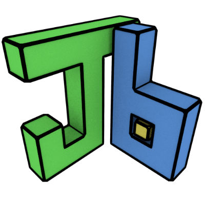

JBrick Environment
An accessible Lego Mindstorm NXT programming environment
About the Project
This product was created in order to provide people with visual disabilities an environment that accessible with screen reader capabilities. The environment itself provides the tools needed to program the Lego Mindstorms NXT robots using the NXC programming language. It was created with Java in the Eclipse environment.
Where the Project Came From
JBrick was developed by the Center of Accessibility and Inclusion Research here at the Rochester Institute of Technology in the Golisano College of Computing and Information Sciences. It's made up of a mix of professors and student researchers. I began working for CAIR the Summer of 2014 as a student researcher and was added onto the JBrick environment project that had been started in 2009. My group's job that summer was to polish and resolve as many lasting issues as possible in an attempt to finish up the project.
My Main Role
A particular feature of JBrick that I am proud of is the piano composer that I was in charge of fixing up. The purpose of this feature is that the user could create simple songs for their robots to play as they drove around. The user would create the song they wanted and the program would generate the NXC code necessary for them to add into their main robot program.
To learn more about RIT's CAIR: CAIR at RIT
To learn more about JBrick, here is our Github Repository